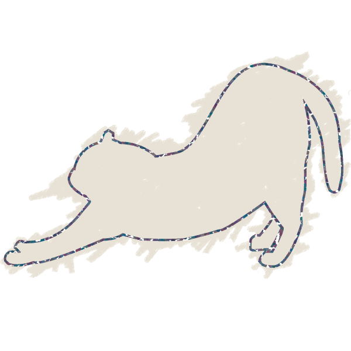

Web Engineer
Web Engineer
1992年大阪生まれ、大阪育ち。
大学在学中にドイツへ1年間留学。
2018年大阪市立大学大学院にて文学修士を修了。
ドイツ系文化機関で総務兼IT管理を担当しつつ,
ドイツ語講師として大学でも勤務していました。
現在はWebエンジニアを目指して、
キャリアチェンジに挑戦中。
趣味は旅行、ワインとウイスキーが好き。
（強くないけど呑んべえ。）
猫アレルギーだけどネコ派。語学フリーク。
ドイツ語、英語、フランス語（少し）できます。
★★★★☆（〜半年）
スキルアップのため日々練習中。
普段はPugでマークアップしています。
★★★☆☆（〜半年）
CSS設計(BEM, FLOCSS中心)、
Sassも一通り学習しました。
でもCSSは奥が深い！まだまだ修行中。
★★★☆☆（〜半年）
jQueryと同時に学習中。
グラフィカルな動きが実装できるよう、
複雑なコードもスラスラ書けるように
なることが目標です！
★★★☆☆（1年〜）
画像の切り抜きや簡単な加工処理、
書き出しなどはできます。
前職でも少し使っていました。
★★★☆☆（〜半年）
バナー制作などで使用しています。
今はベジェ曲線を練習中。
各種DMにてメッセージ
お待ちしております♪